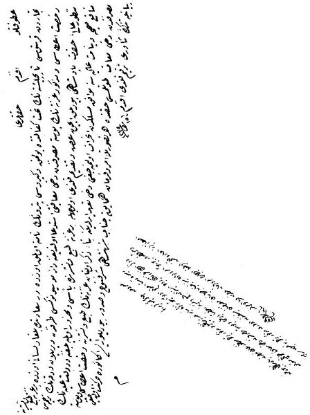

Tüccardan Hristos Topçiplişte'nin taht-ı kefaletinde ve Kiryos Petro'nun namına olmak üzere Dersaadet'te Bulgar lisanı üzere çıkacak gazeteye ruhsat itâsı posta masrafından dahi muafiyetini talep eden istîda üzerine, Devlet-i Âliyye'nin politikasına uygun bir yol izleyeceğini belirten irade, BOA, İ., Hariciye, no: 11050, 15 Re 1279/Ocak 1863.